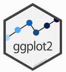
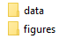

Session 2: Data import/export and data visualization
data/input_datadata/analysis_dataReproducibility
The .tsv format ensures that your data can be opened using other software (interoperability).
data/input_datadata/analysis_datahttps://osf.io/j43v9/
data_quantifiers.tsvdata_quantifiers_wide.xlsxdata/input_dataErrors
A lot can go wrong when reading data into R. Make sure you routinely include error checks into your workflow. Always carefully inspect the data at different stages of processing/analysis.
read_excel() (package: readxl)read.csv() or read.csv2()read.delim()read_tsv() (package: tidyverse)dhere(){readxl} and {here}install.packages()here() to locate fileshere("directory", "file_name")read_xlsx()read_tsv() (part of the tidyverse)spc_tbl_ [80 x 3] (S3: spec_tbl_df/tbl_df/tbl/data.frame)
$ subject : chr [1:80] "subj_01" "subj_02" "subj_03" "subj_04" ...
$ quantifier: chr [1:80] "few" "few" "few" "few" ...
$ percent : num [1:80] 5 20 10 8 12 15 25 10 15 10 ...
- attr(*, "spec")=
.. cols(
.. subject = col_character(),
.. quantifier = col_character(),
.. percent = col_double()
.. )
- attr(*, "problems")=<externalptr> head()$ to access a column (variable) in the data frame [1] 5.0 20.0 10.0 8.0 12.0 15.0 25.0 10.0 15.0 10.0 10.0 10.0 7.0 15.0 15.0
[16] 6.0 5.0 10.0 15.0 10.0 15.0 35.0 27.5 20.0 30.0 35.0 40.0 30.0 33.0 33.0
[31] 25.0 40.0 20.0 40.0 30.0 14.0 12.5 25.0 40.0 20.0 30.0 70.0 65.0 51.0 50.0
[46] 60.0 67.5 60.0 67.0 67.0 50.0 70.0 60.0 69.0 75.0 75.0 65.0 70.0 75.0 80.0
[61] 50.0 80.0 85.0 80.0 75.0 90.0 92.5 80.0 85.0 90.0 75.0 90.0 85.0 90.0 85.0
[76] 91.0 80.0 90.0 90.0 90.0write_tsv()Saving data tables
To make sure you never overwrite the input data file, keep the input data in the subfolder data/input_data, and the processed data in the subfolder data/analysis_data.
dplyr packagedplyr package (part of the tidyverse)|> or %>%dplyr functionsfilter() Select a subset of observationsselect() Select a subset of variablesarrange() Change order of rows based on a variablemutate() Add new variables that are functions of data in the tablesummarize() Obtain data summaries (mean, count, sd, etc.)group_by() Form groupsfilter()==select()arrange()group_by() and summarize()# A tibble: 20 x 2
subject mean_percent
<chr> <dbl>
1 subj_01 25
2 subj_02 51.2
3 subj_03 46.9
4 subj_04 39.8
5 subj_05 41.8
6 subj_06 50
7 subj_07 56.2
8 subj_08 45
9 subj_09 50
10 subj_10 50
11 subj_11 40
12 subj_12 52.5
13 subj_13 43
14 subj_14 53.5
15 subj_15 51.2
16 subj_16 46.5
17 subj_17 40.6
18 subj_18 48.8
19 subj_19 55
20 subj_20 50 dplyr functions: Longer pipesgroup_by() and summarize()# A tibble: 20 x 2
subject mean_percent
<chr> <dbl>
1 subj_01 25
2 subj_02 51.2
3 subj_03 46.9
4 subj_04 39.8
5 subj_05 41.8
6 subj_06 50
7 subj_07 56.2
8 subj_08 45
9 subj_09 50
10 subj_10 50
11 subj_11 40
12 subj_12 52.5
13 subj_13 43
14 subj_14 53.5
15 subj_15 51.2
16 subj_16 46.5
17 subj_17 40.6
18 subj_18 48.8
19 subj_19 55
20 subj_20 50 dplyr functions: Longer pipesarrange()# A tibble: 20 x 2
subject mean_percent
<chr> <dbl>
1 subj_01 25
2 subj_04 39.8
3 subj_11 40
4 subj_17 40.6
5 subj_05 41.8
6 subj_13 43
7 subj_08 45
8 subj_16 46.5
9 subj_03 46.9
10 subj_18 48.8
11 subj_06 50
12 subj_09 50
13 subj_10 50
14 subj_20 50
15 subj_02 51.2
16 subj_15 51.2
17 subj_12 52.5
18 subj_14 53.5
19 subj_19 55
20 subj_07 56.2dplyr functions: Longer pipesdesc(...)# A tibble: 20 x 2
subject mean_percent
<chr> <dbl>
1 subj_07 56.2
2 subj_19 55
3 subj_14 53.5
4 subj_12 52.5
5 subj_02 51.2
6 subj_15 51.2
7 subj_06 50
8 subj_09 50
9 subj_10 50
10 subj_20 50
11 subj_18 48.8
12 subj_03 46.9
13 subj_16 46.5
14 subj_08 45
15 subj_13 43
16 subj_05 41.8
17 subj_17 40.6
18 subj_11 40
19 subj_04 39.8
20 subj_01 25 dplyr functions: Longer pipesfilter()ggplot2 package (part of the tidyverse)
ggplot2
The way in which ggplot2 works may seem confusing at first. However, it is a very flexible and powerful tool and has become the de-facto standard for adanced data visualization in R. There is a large community of users, which makes it easy to find help online.
# A tibble: 20 x 2
subject mean_percent
<chr> <dbl>
1 subj_01 25
2 subj_02 51.2
3 subj_03 46.9
4 subj_04 39.8
5 subj_05 41.8
6 subj_06 50
7 subj_07 56.2
8 subj_08 45
9 subj_09 50
10 subj_10 50
11 subj_11 40
12 subj_12 52.5
13 subj_13 43
14 subj_14 53.5
15 subj_15 51.2
16 subj_16 46.5
17 subj_17 40.6
18 subj_18 48.8
19 subj_19 55
20 subj_20 50 ggsave() to save graph as PDFhere() to refer to subfolder “figures”Saving graphs: File format
Always save graphs as PDF files, to have publication-quality images. If you need to insert a graph into a PowerPoint (or Word), use the free software IrfanView: (1) Open the PDF using Adobe Acrobat, (2) Zoom in/out to set the resolution, (3) Make a screenshot, (4) Paste it (Ctrl. + V) into IrfanView, (5) cut out the graph (Ctrl. + C), and (6) paste it (Ctrl. + V) into PowerPoint/Word.
